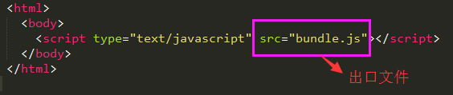
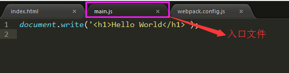
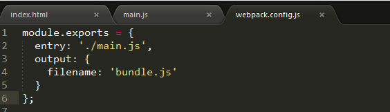
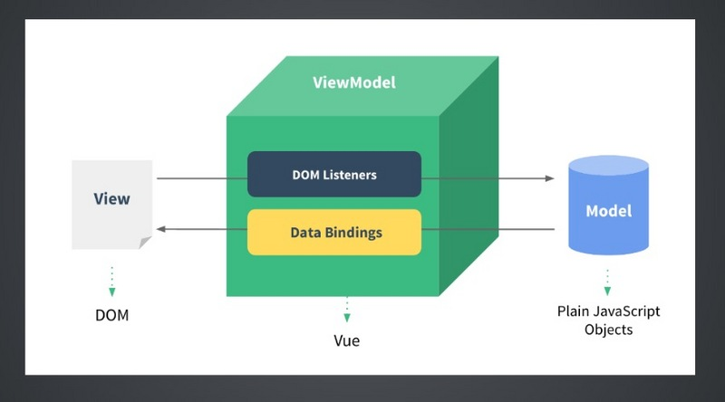
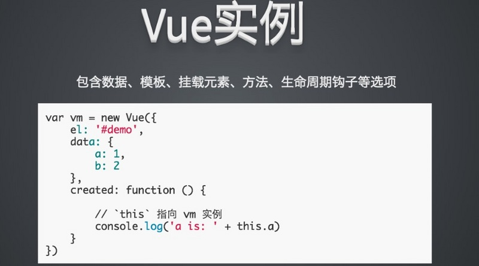
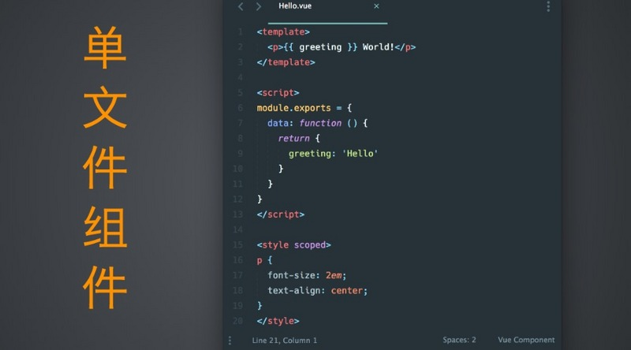

webpack+Vue.js
webpack配置
什么是webpack？
webpack是一个web前端的模块打包工具。它可以将许多松散的模块按照依赖和规则打包成符合生产环境部署的前端资源。还可以将按需加载的模块进行代码分隔，等到实际需要的时候再异步加载。通过 loader 的转换，任何形式的资源都可以视作模块，比如 CommonJs 模块、 AMD 模块、 ES6 模块、CSS、图片、 JSON、Coffeescript、 LESS 等。
webpack工作如下图：

如何配置适合自己的webpack？
1.Node与NPM的安装 通过 npm init 创建 package.json 文件
2.初学webpack
  
执行 webpack webpack.config.js 即可以自动生成bundle.js文件
3.webpack loaders的配置
----- 通过 npm install loaderName --save 安装依赖包，并将对应的依赖写入package.json文件中
4.webpack插件的配置
（2）html-webpack-plugin插件 作用：将模板文件转成html文件
（3）browser-sync-webpack-plugin 插件
Vue.js的学习
Vue.js的概念模型
小注：Vue.js和jQuery最大的不同点在于jQuery通过操作DOM来改变页面的显示，而Vue通过操作数据来实现页面的更新与展示。
基础的Vue.js实例

单文件组件

父子组件通信

路由配置